Despre aplicație
Casierul clasei este pentru părintele care se ocupă de fondul unei clase. Ține într-un singur loc contribuțiile fiecărui copil, cheltuielile clasei și fiecare plată, așa că persoana care strânge banii știe mereu soldul și cine mai are de plătit. O singură instalare poate gestiona mai multe clase și școli, fiecare cu registrul ei separat.
Aplicația este în limba română, cu sumele în lei. Accesul se face prin invitație, pentru o singură clasă și un singur rol. Casierul vede și modifică totul. Un părinte vede totalurile clasei și contul propriului copil. Un auditor vede tot registrul și rapoartele, fără să poată modifica nimic. Accesul doar pentru citire poate expira la o dată aleasă. O invitație poate activa două dispozitive, de exemplu un telefon și un laptop.
Galerie
Toate datele din aceste capturi sunt inventate.
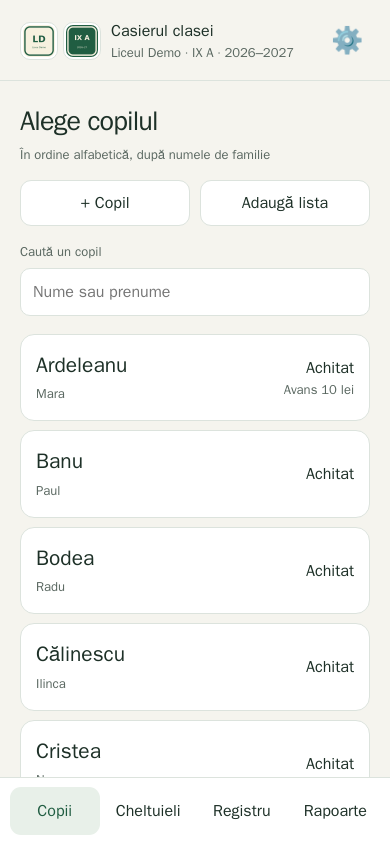
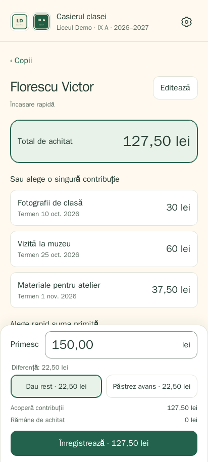
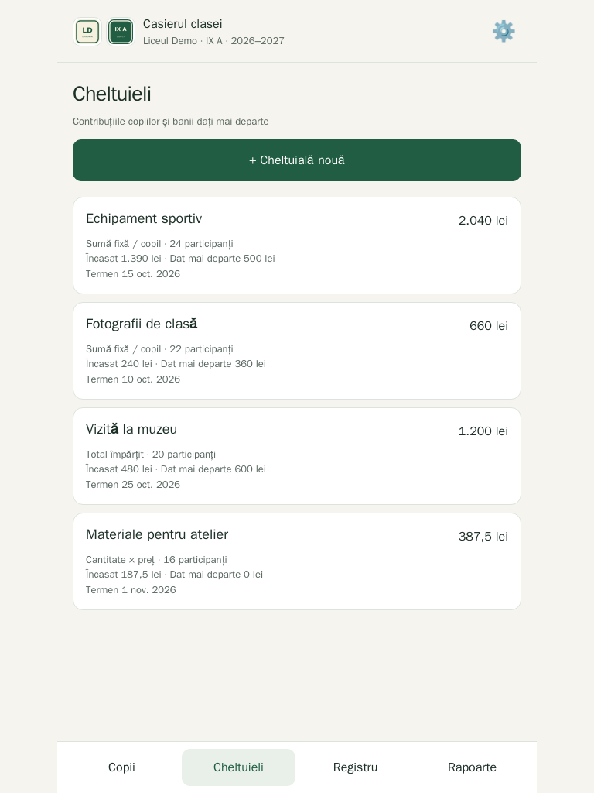
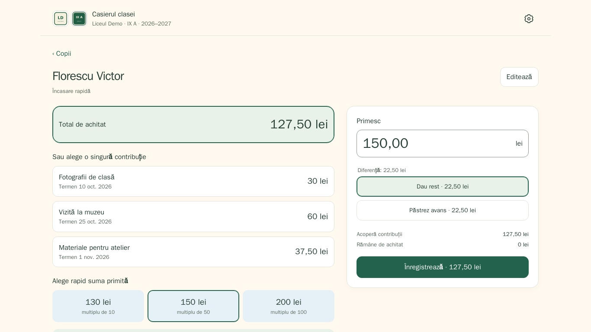
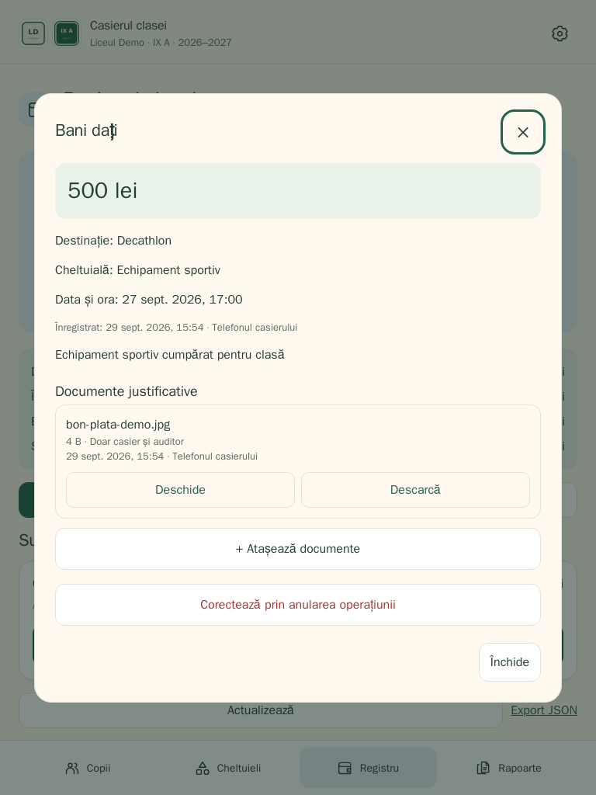
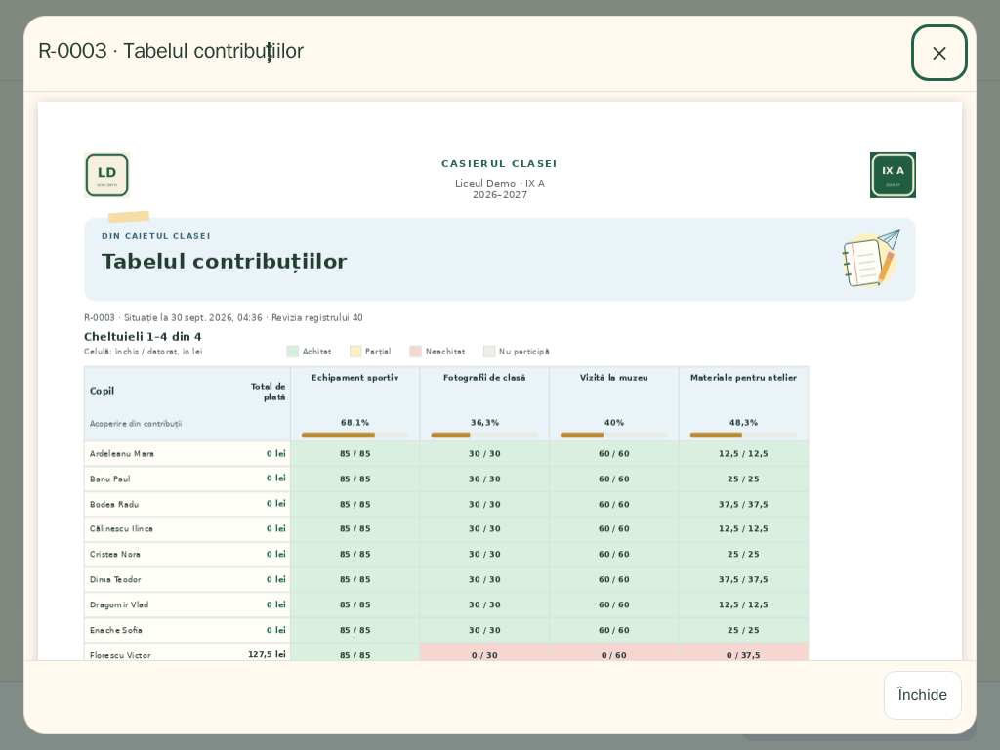
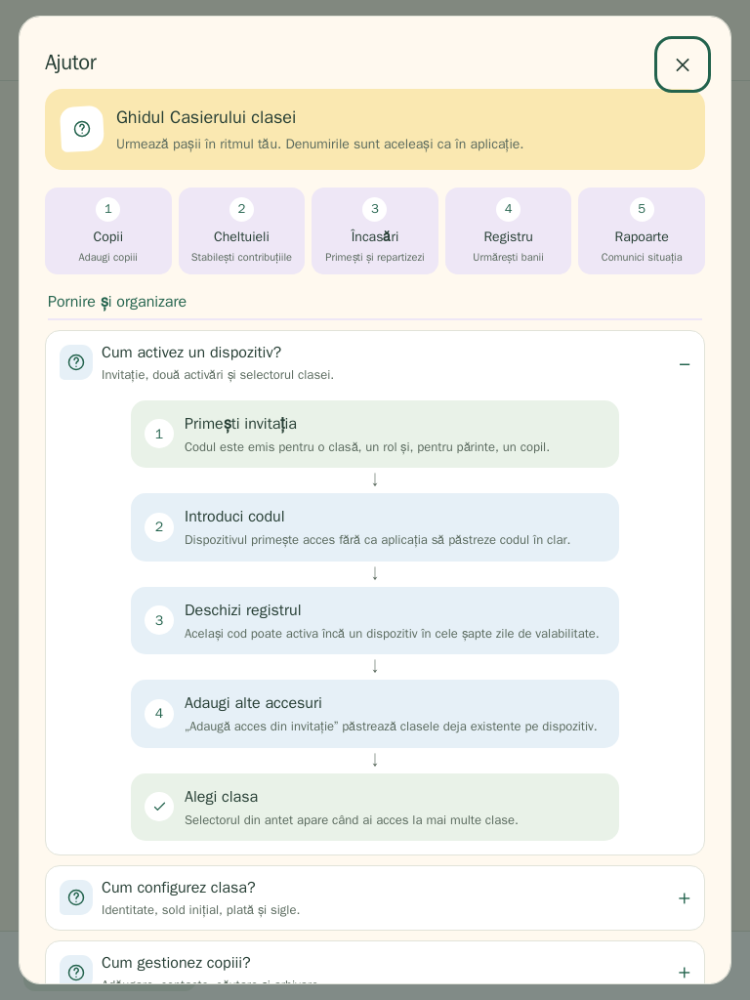
Cum funcționează
- Configurează clasa. Adaugă școala, clasa și anul școlar, apoi copiii, pe rând sau lipind o listă.
- Creează cheltuieli. Alege copiii care participă și cum se împarte costul: o sumă fixă pe copil, un total împărțit între ei sau o cantitate pe copil înmulțită cu prețul unitar.
- Încasează banii. Atinge un copil și alege tot ce are de plată sau o singură cheltuială. Butoanele mari rotunjesc suma în sus la următorul multiplu de 5, 10, 50 sau 100 de lei, iar diferența se dă rest sau se păstrează ca avans.
- Plătește și ține evidența. Înregistrează banii dați mai departe, cu destinația și, opțional, cheltuiala de care țin, și urmărește soldul clasei în registru.
Toate fluxurile dintr-o privire
Patru planșe care se pot imprima arată toate cele 15 fluxuri, aceleași prin care te ghidează ajutorul integrat al aplicației. La fel ca aplicația, sunt în limba română.
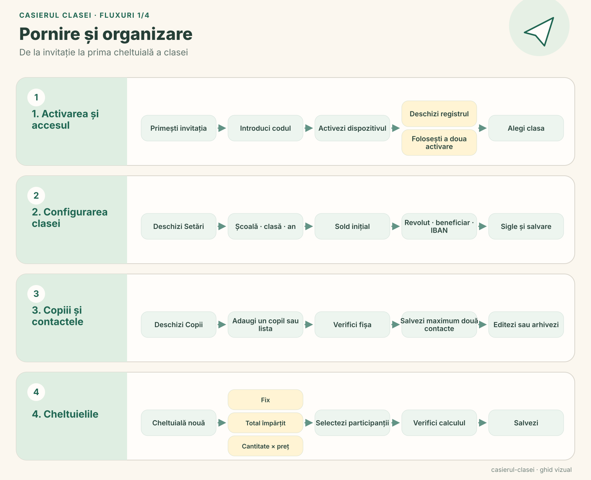
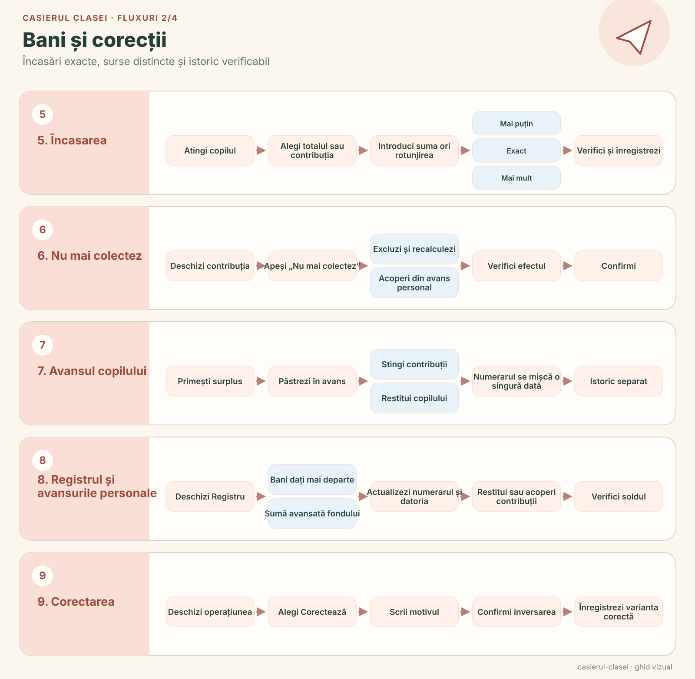
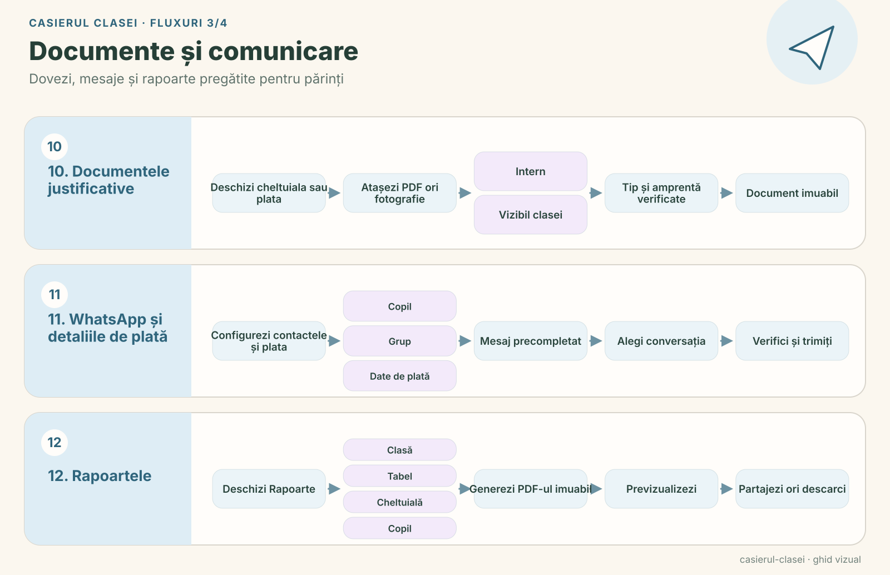
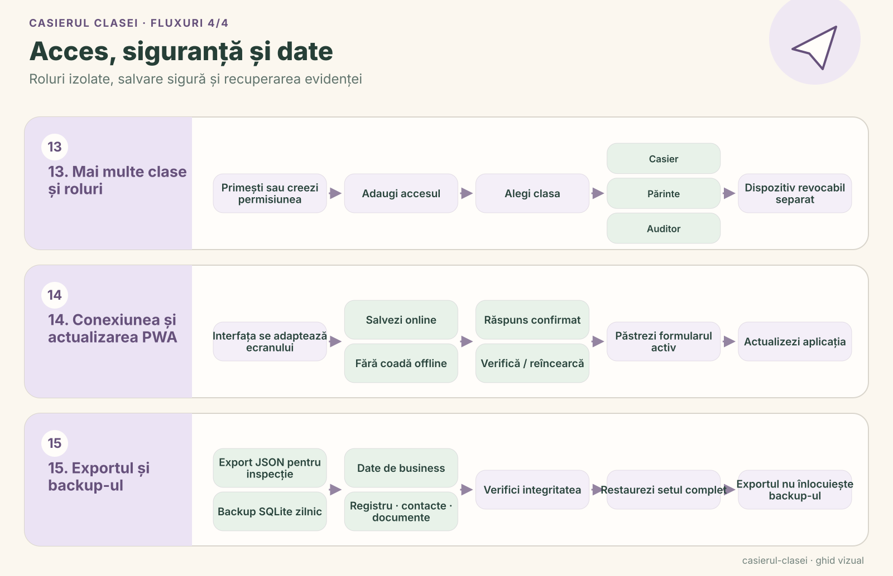
Funcționalități
- Contul fiecărui copil: Contribuții, sume restante, avansuri și istoricul complet pentru fiecare copil.
- Avansuri care se adună: Un avans poate acoperi mai târziu o altă contribuție sau poate fi restituit, iar folosirea lui nu este socotită niciodată drept bani noi intrați.
- Decontat la încasare: Avansul unui copil poate fi folosit direct în ecranul de încasare, așa că în numerar se cere doar restul. Dacă rămâne cel mult 1 leu, suma poate rămâne datorată, poate fi acoperită din avans sau poate fi închisă ca ajustare de rotunjire. Numerarul în sine este înregistrat întotdeauna exact.
- Nu mai colectez: Când o contribuție nu va mai fi colectată, copilul poate fi scos dintr-o cheltuială împărțită cât timp acest lucru mai este posibil, iar partea fiecăruia dintre ceilalți se recalculează. Sau contribuția poate fi acoperită, parțial ori integral, din banii avansați fondului de cineva. Astfel scade ce îi datorează clasa acelei persoane, fără ca numerarul să se miște din nou, iar copilul nu apare niciodată ca plătit de părinți.
- Corecții fără ștergeri: O operațiune confirmată se anulează printr-o corecție separată, cu motiv, așa că istoricul rămâne mereu complet.
- Exact până la ultimul ban: Sumele sunt păstrate în bani întregi, iar împărțirea unui total distribuie exact și ultimii bani.
- Sigur și pe o conexiune slabă: Salvarea are nevoie de internet, dar dacă un răspuns se pierde, o reîncercare confirmă aceeași cerere fără să înregistreze plata de două ori. Modificările făcute pe alt dispozitiv trebuie verificate înainte de salvare.
- Bani avansați fondului: Când cineva plătește pentru clasă din propriul buzunar, aplicația înregistrează suma, o poate lega de o cheltuială și arată cât îi mai datorează clasa până la restituirea parțială sau integrală.
- Documente justificative: Atașează PDF-uri sau fotografii, cum ar fi bonuri, la cheltuieli și plăți. Fiecare fișier are o amprentă digitală, iar casierul decide dacă rămâne doar pentru casier și auditori sau este vizibil și părinților clasei.
- Rapoarte PDF: Vezi, partajează sau descarcă rapoartele direct din aplicație, colorate cu verde pentru achitat, galben pentru parțial, roșu pentru restant și albastru pentru solduri și bani dați mai departe. Fiecare PDF păstrează siglele și culorile școlii și ale clasei de la momentul emiterii.
- Acoperirea cheltuielilor: Situația clasei, raportul fiecărei cheltuieli și tabelul contribuțiilor arată o bară și un procent pentru fiecare cheltuială: cât din necesar a fost acoperit, cu banii de la părinți și sumele acoperite din fond afișate separat.
- Mementouri pe WhatsApp: Salvează până la două contacte WhatsApp pentru fiecare copil și deschide o conversație privată cu soldul copilului deja scris, eventual împreună cu raportul său PDF. Nimic nu se trimite automat, iar contactele sunt văzute doar de casier: niciodată de părinți sau auditori și niciodată în PDF-uri sau exporturi.
- Detalii de plată: Linkul Revolut.me al clasei, numele beneficiarului și IBAN-ul sunt păstrate în setări și apar în rapoartele individuale, de clasă și de cheltuieli, precum și în mementouri, gata de copiat sau de trimis.
- Ajutor pe fiecare ecran: Semnul întrebării din antet deschide ghiduri vizuale pentru toate cele 15 fluxuri, adaptate rolului tău. Fiecare ecran principal își deschide propriul ghid, iar verificarea modului de încasare nu pierde niciodată suma deja introdusă.
- Mai multe clase, ținute separat: Fiecare clasă are propria bază de date, proprii copii, cheltuieli, rapoarte, sigle și drepturi. Un selector din antet comută între clase, iar același dispozitiv poate avea roluri diferite în clase diferite.
- Părinții văd doar propriul copil: Dispozitivul unui părinte primește totalurile clasei și datele copilului său, niciodată numele sau plățile celorlalți copii.
- Gândit pentru orice ecran: Pe telefon, încasarea rămâne la îndemână. Pe tabletă, listele se așază pe coloane; pe laptop, navigarea se mută lateral, iar registrul arată soldul și istoricul alături. Rotirea sau redimensionarea ferestrei păstrează ce scriai.
- Un aspect prietenos: Culori calde, ilustrații discrete și explicații pe înțelesul tuturor despre cine ce are de plătit. Rapoartele au mici accente de papetărie, cum ar fi un caiet și un avion de hârtie, iar sumele și tabelele rămân clare.
- Export JSON: O copie lizibilă a datelor și a istoricului, fără nicio credențială.
Cum este construit
Casierul clasei rulează pe Node.js 24 cu SQLite încorporat. PDFKit generează rapoartele, iar o copie locală a PDF.js permite previzualizarea lor. Aplicația nu încarcă biblioteci sau fonturi de pe servere externe. Actualizările folosesc pwa-kit, iar invitațiile și dispozitivele sunt gestionate prin PWA Invite Console. Integritatea copiilor de rezervă zilnice este verificată înainte de păstrare. Codul propriu al proiectului este licențiat GPL-3.0-or-later.